Interaction Design
Concept Ideation
Building upon previous studies conducted at Cornell, our research group wanted to explore the effects of social media on how people achieve goals. To do this, we decided to develop our own goal tracking platform, Achieve, from scratch. We sent out surveys about goal tracking applications to college students, our target audience. The results led us to realize that students would feel more motivated to achieve their goals if they completed their goals in groups. A study by Burke and Settles showed that groups that consist of already existing relationships inspires higher performance, so we decided to create a platform focused on accomplishing goals with pre-existing friend groups.
Below are pictures from some of our brainstorming sessions:
- 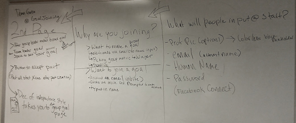
planning out the flow of the signup process
- 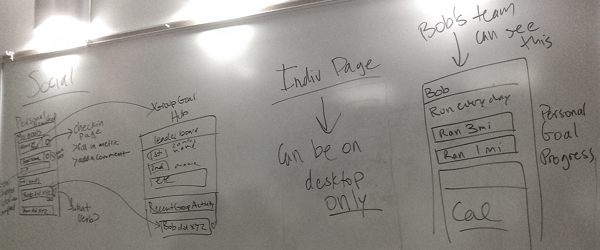
planning out the team and individual page
- 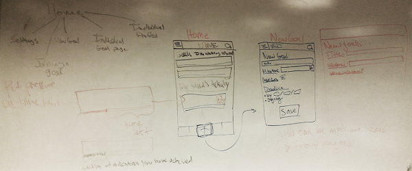
planning out navigation and event creation
Final Wireframes
High-fidelity Wireframes for the Group Goal Pages
On the left is the social feed for the group goals page. Here users can view and comment on their friends progress of their shared goals. The middle image is the 'Group Progress' view, which gives users a more visual way to check their group's progress. Clicking a on a user's profile picture or name brings a user to the right page, the 'Individual Progress' page. This page documents one user's progress for the goal in question.
- 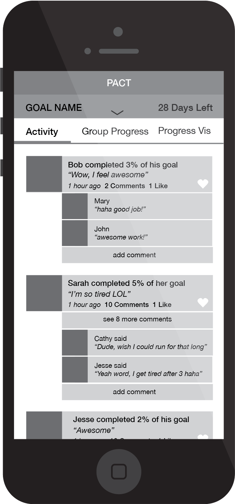
- 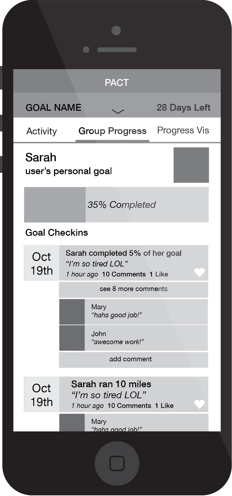
- 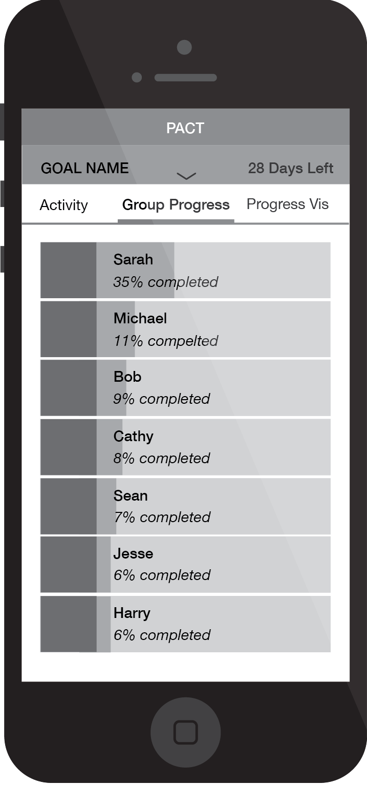
High-fidelity Wireframes for the Goal Checkin Process
The homescreen, on the left, provides an overview of friends' activity in all goals a user is working towards. All of the users goals are listed on the top, to constantly remind them what they are working toward. Initially we considered having a seperate check-in screen (middle). However we were concerned that removing people from the main page with the full list of all their goals might discourage them from checking into mutliple goals rapidly. To prevent this, we developed a pop-over check-in system, where users have the ability to check in from the home screen, making it quick and easy to log their progress (last image).
- 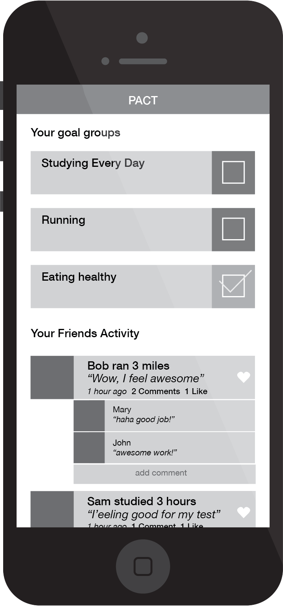
- 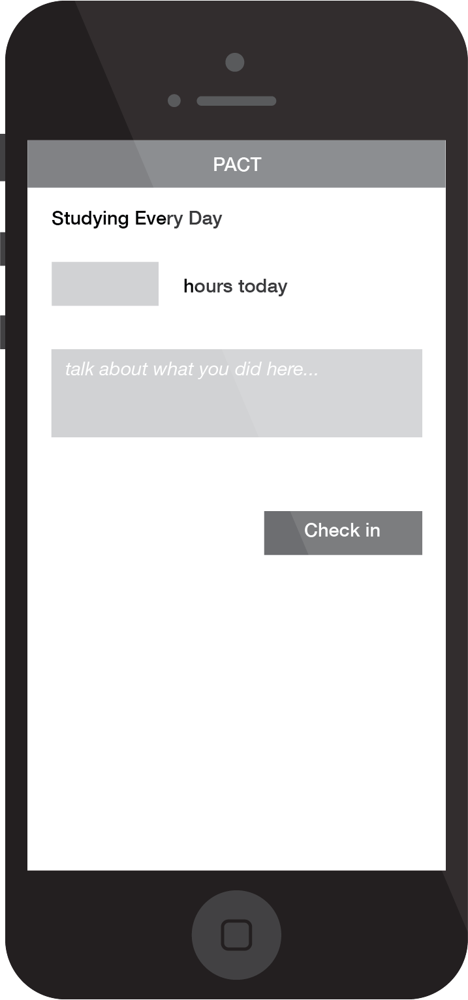
- 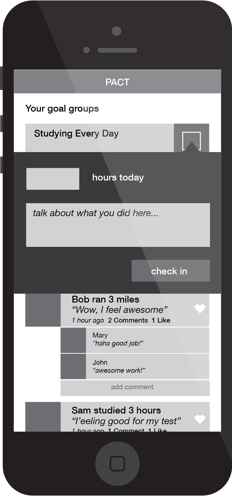
Visual Design
Green was chosen as the accent color of the app because green is generally associated with success. To help enforce a social feel, profile pictures of users are shown, and activity is shown as speech bubbles. The “add comment” box is available under every single post to make it clear to users that commenting is encouraged. Users also have the option to like their friends progress, so they can quickly and easily give their friends positive feedback.
- 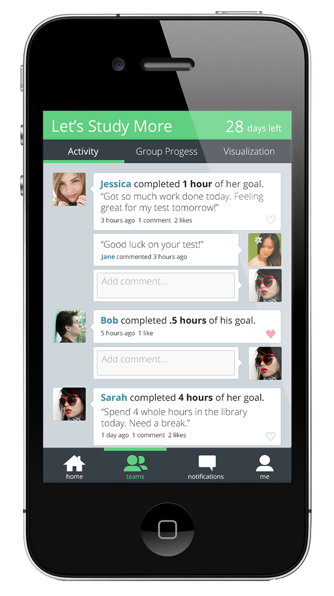
Group Goal page for a group trying to study more
- 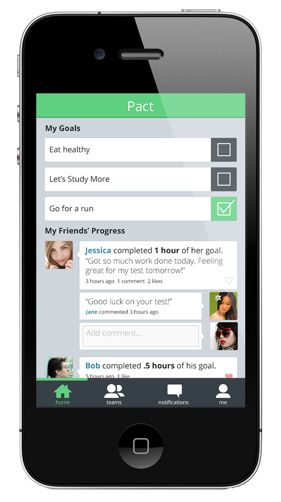
Home Screen for a signed-in user